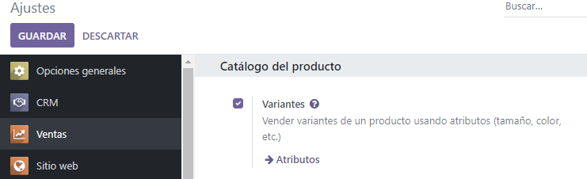
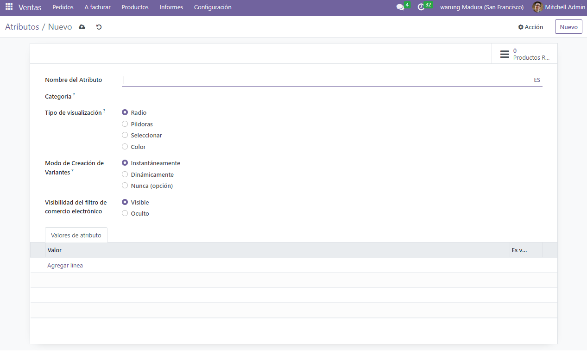
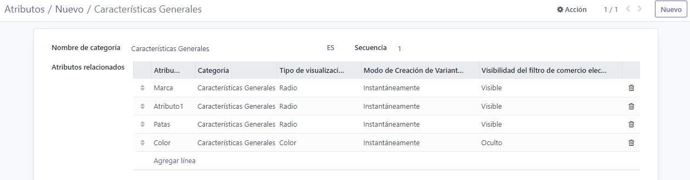
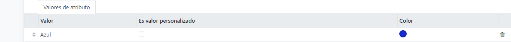
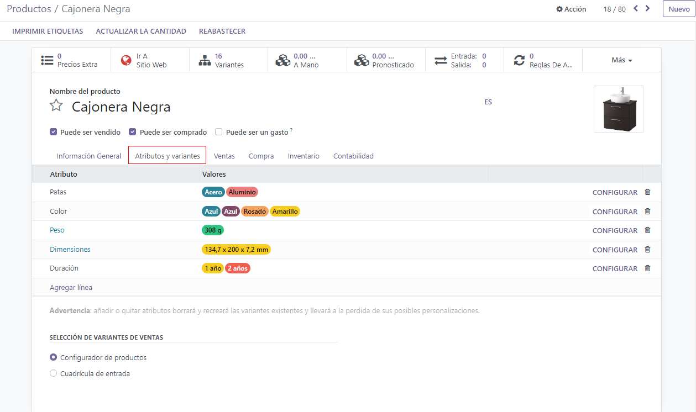
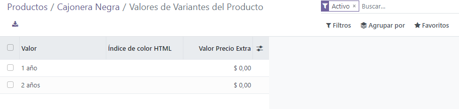
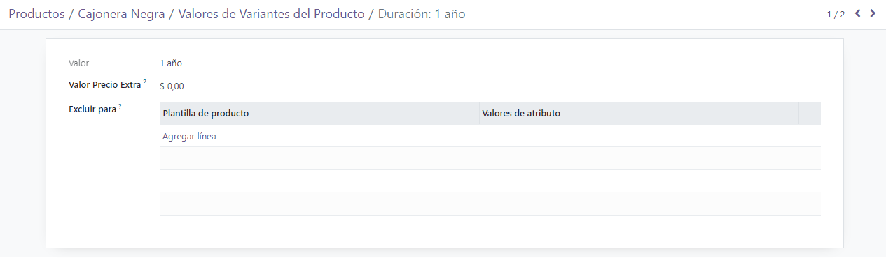

Variantes de producto¶
Usamos las variantes de producto para que productos únicos tengan diferentes características y opciones que los clientes puedan elegir, como tamaño, estilo, color, entre otras.
Puede gestionar las variantes de los productos en la plantilla de cada producto, o si va a la página Variantes de producto o Atributos. Todas estas opciones se encuentran dentro de la aplicación Ventas de Odoo.
Example
Una empresa de ropa tiene el siguiente desglose de variantes para una de sus camisetas más vendidas:
Camiseta clásica unisex
Color: azul, rojo, blanco, negro
Talla: CH, M, G, XG, XXG
Aquí, la camiseta es la plantilla del producto y Camiseta: Azul, S es una variante de producto específica.
El tamaño y el color son atributos y las opciones correspondientes (como azul y S) son los valores.
En este caso, hay un total de veinte variantes de producto diferentes: cuatro opciones de color multiplicadas por cinco opciones de tamaño. Cada variante tiene su propio inventario, total de ventas y otros registros similares en Odoo.
Ver también
Configuración¶
Para usar variantes de producto, debe activar las variantes en la aplicación Ventas de Odoo.
Para hacerlo, vaya a , y ubique la sección Catálogo de producto en la parte superior de la página.
En esta sección, marque la caja para activar la funcionalidad Variantes.
Después, haga clic en Guardar en la parte superior de la página de Ajustes.
Atributos¶
Antes de poder configurar las variantes de productos, debe crear los atributos. Para crear, gestionar y modificar los atributos, vaya a .
Nota
El orden de los atributos en la página Atributos determina cómo aparecen en el configurador de productos, el tablero de Punto de venta y las páginas de Comercio electrónico.
Para crear un nuevo atributo desde la página Atributos haga clic en Nuevo. Así se mostrará un formulario de atributo en blanco que usted puede personalizar y configurar de varias maneras.
Primero, cree un Nombre de atributo, como Color o Tamaño.
Después, en el campo opcional Categoría seleccione una categoría desde el menú desplegable para agrupar atributos similares dentro de la misma sección para ser más específicos y organizados.
Nota
Para ver los detalles relacionados a la categoría de atributos seleccionada, haga clic en el enlace del símbolo ➡️ (flecha) que se encuentra a la derecha del campo Categoría. Así se mostrará el formulario de detalle de la categoría de ese atributo.
Aquí, el Nombre de categoría y la Secuencia se muestran en la parte superior, seguido por atributos relacionados asociados con la categoría. Puede arrastrar y soltar estos atributos en el orden de prioridad que quiera.
Puede agregar atributos directamente a la categoría, también puede hacer clic en Agregar una lína.
Truco
Para crear una categoría de atributo directamente desde este campo, empiece a escribir el nombre de la nueva categoría. Después seleccione Crear o Crear y editar… en el menú desplegable que aparece.
Al hacer clic en Crear, se crea la categoría, la cual podrá editar después. Si hace clic en Crear y editar… se crea la categoría y aparece una ventana emergente para Crear categoría, en donde podrá personalizar y configurar la categoría de inmediato.
Abajo del campo Categoría están las Opciones de visualización. El tipo de visualización determina cómo se mostrará el producto en la tienda en línea, en el tablero del Punto de venta y en el Configurador del producto.
Las Opciones de visualización son:
Radio: las opciones aparecerán en una lista con botones de opción en la página de productos de la tienda en línea.
Barra: las opciones aparecerán como botones seleccionables en la página de la tienda en línea del producto.
Seleccionar: las opciones aparecen en un menú desplegable en la página del producto de la tienda en línea.
Color: las opciones aparecen como cuadrados pequeños de colores que representarán en la página del producto en la tienda en línea el código de color HTML que se haya seleccionado.
El campo modo de creación de las variantes le informa a Odoo cuándo debe crear de manera automática una nueva variante, después de agregar un atributo a un producto.
Instantáneamente: crea todas las variantes posibles tan pronto como se agregan atributos y valores a una plantilla de producto.
Dinámicamente: crea variantes solo cuando se agregan atributos y valores correspondientes a una orden de venta.
Nunca (opción): nunca crea variantes de manera automática.
Advertencia
El modo de creación de las variantes de un atributo no se puede editar después de que se agregó a un producto.
Por último, el campo Visibilidad del filtro de comercio electrónico determina si las opciones de este atributo serán visibles para el cliente desde el frontend cuando estén comprando en la tienda en línea.
Visible: los clientes pueden ver los atributos de los valores desde el frontend.
Oculto: los clientes no pueden ver los atributes de valores desde el frontend.
Valores de atributos¶
Los valores de los atributos se tienen que agregar en la pestaña Valores de atributo. Puede agregar valores a un atributo a la vez si así lo necesita.
Para agregar un valor, haga clic en Agregar una línea en la pestaña Valores de atributo.
Después, ingrese el nombre del valor en la columna Valor. Después, marque la casilla en la columna Es valor personalizado, si el valor es personalizado (es decir, el cliente brindará especificaciones únicas para este valor en específico).
Nota
Si selecciona el Tipo de visualización - Color, aparecerá la opción para para agregar un código de color HTML en el lado derecho de la línea de valor, para que sea más fácil para los vendedores y clientes saber exactamente qué opción están seleccionando.
Para elegir un color, haga clic en el círculo en blanco en la columna Color, lo cual mostrará una ventana emergente para seleccionar el color HTML.

En esta ventana emergente, seleccione un color específico, solo tiene que arrastrar el seleccionador de color al tono que quiera y hacer clic para confirmar.
O seleccione un color específico, haga clic en el icono de gotero y seleccione el color deseado que pueda hacer clic en la pantalla.
Truco
También puede crear atributos desde la plantilla de producto. Agregue una nueva línea y escriba el nombre en la pestaña Variantes.
Una vez que se agrega un atributo a un producto, ese producto se enlista y se puede acceder con el botón inteligente Productos relacionados. Ese botón enlista todos los productos en la base de datos que están utilizando el atributo.
Variantes de producto¶
Una vez que se crea el atributo, úselo (junto con sus valores) para crear una variante de producto. Para hacerlo, vaya a y seleccione un producto existente para ver el formulario de producto deseado. O, haga clic en Crear para crear un producto nuevo al que le puede agregar una variante de producto.
En el formulario de producto, haga clic en le pestaña Atributos y variantes para ver, gestionar y modificar los atributos y valores del producto.
Para agregar un atributo a un producto, y valores de atributo subsecuentes, haga clic en Agregar una línea en la pestaña Atributos y valores. Después, seleccione el atributo deseado del menú desplegable que aparece.
Truco
Puede crear atributos directamente desde la pestaña Atributos y variantes del formulario de producto. Para hacerlo, primero escriba el nombre del nuevo atributo en el campo en blanco y seleccione ya sea Crear o Crear y editar… desde el menú desplegable que aparece.
Al hacer clic en Crear, se crea el atributo, el cual podrá editar después. Si hace clic en Crear y editar… se crea el atributo y aparece una ventana emergente para Crear el atributo, en donde podrá personalizar y configurar la categoría de inmediato.
Una vez que seleccione un atributo en la columna Atributo seleccione los valores específicos de atributo que tiene que aplicar en el producto, desde el menú desplegable disponible en la columna Valores.
Nota
No hay límite sobre cuántos valores puede agregar.
Truco
Puede acceder a procesos de creación de variantes para productos similares a través de las aplicaciones Compra, Inventario y Comercio electrónico.
Configurar variantes¶
A la derecha de la línea de atributo está el botón Configurar. Al hacer clic, Odoo mostrará una página separada con esos Valores de variantes de producto específicos.
Aquí puede ver el nombre específico de Valor, Índice de color HTML (si aplica) y el Valor del precio adicional.
Nota
El Valor de precio adicional representa cuánto aumentará el precio de venta si se selecciona el atributo.
Cuando se hace clic en la página Valores de variantes de producto Odoo mostrará una página a parte donde verá los detalles relacionados a los valores.
En esa página de detalles de la variante específica podrá encontrar los campos Valor y Valores de variantes de producto, así como un campo Excluir para.
En el campo Excluir para puede agregar Plantillas de producto y Valores de atributo específicos. Al hacerlo, este valor de atributo específico se excluirá de esos productos.
Impacto de variantes¶
Además de ofrecer opciones de productos más detalladas a los clientes, las variantes de producto tienen sus propios impactos y puede aprovecharlas en toda la base de datos de Odoo.
Código de barras: los códigos de barra están asociados con cada variante en lugar de cada plantilla de producto. Cada variante individual puede tener su propio código de barras o SKU.
Precio: cada variante de producto tiene su propio precio público, el cual es la suma de la plantilla del producto y cargos adicionales para atributos particulares.
Example
El precio de una playera roja es $23, porque el precio en la plantilla de la playera es $20, más unos $3 adicionales por la variante del color rojo. Las reglas de la lista de precios se pueden configurar para aplicarse a la plantilla del producto, o a la variante.
Inventario: el inventario se cuenta por cada variante de producto individual. En el formulario de la plantilla del producto, el inventario refleja la suma de todas las variantes, pero el inventario real se calcula según las variantes individuales.
Imagen: cada variante de producto puede tener su propia imagen específica.
Nota
Los cambios a la plantilla del producto se aplican automáticamente a cada variante de ese producto.
Ver también
importar